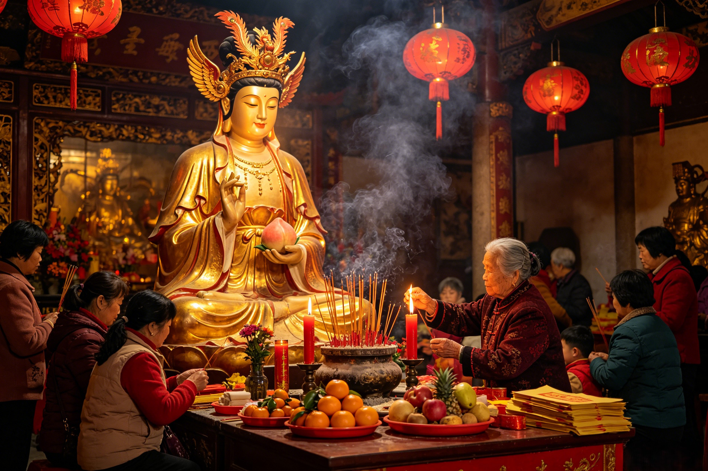

Devotion Across Three Millennia
From Shang dynasty rituals to modern temple festivals — how the faithful approach the Empress of Immortality.
The single most important date in the Queen Mother's liturgical calendar is the third day of the third lunar month (农历三月初三), universally recognized across Chinese folk religion as the birthday of the Queen Mother of the West. On this day, known as Shangsi Festival (上巳节) in ancient times and still observed as Xiwangmu's sacred day, temples across China, Taiwan, and the diaspora erupt in celebration. The date falls in early spring when peach blossoms bloom — a natural alignment with the goddess of the Peach Garden that worshippers have remarked upon for millennia.
The festival day begins before dawn. Devotees arrive at temples carrying elaborate offerings: platters of peaches (fresh if in season, otherwise carved from wood or molded from rice flour), long-life noodles, round mooncakes symbolizing completeness and unity, and vases of peach blossoms arranged in the traditional five-vessel pattern. Incense of sandalwood and peach wood fills the air as worshippers light the first sticks at the hour of the tiger (3–5 AM), when the boundary between the mortal and divine realms is thinnest. Many temples hold a Peach Banquet reenactment ceremony called Pantao Hui (蟠桃会), where specially selected devotees — often the elderly or those who have made particular contributions to the temple — are served peach-shaped buns (寿桃包, shoutao bao) dyed pink, symbolizing the celestial peaches of immortality. The distribution of these buns is the ritual high point of the day, mirroring the divine Peach Banquet where the Queen Mother distributes true immortality to the gods — and where Sun Wukong once stole what was never meant for him, setting heaven ablaze.
In the evening, lantern ceremonies light up the temple grounds. Paper lanterns painted with peach blossoms and images of the Queen Mother's blue birds are released into the sky or floated on rivers, each lantern carrying a devotee's prayer for longevity, health, or family harmony. The largest known celebration occurs at the Yaochi Palace (瑶池宫) in Taipei, where over 50,000 pilgrims gather annually for a three-day festival featuring Taoist processions, opera performances of the Queen Mother's legends, and the ceremonial distribution of over 10,000 peach buns. In mainland China, the Xi Wang Mu Temple in Beijing's Pinggu District holds a grand temple fair that attracts pilgrims from across Hebei, Shandong, and Shanxi provinces. The festival is not merely a religious observance — it is a cultural homecoming, a reaffirmation of the bond between the goddess and her people that has persisted for over 3,000 years.
The Queen Mother of the West is enshrined in hundreds of temples across the Chinese cultural sphere, each claiming a connection to her celestial abode. The most famous is the Yaochi Palace (瑶池宫, Jade Pool Palace) — named after the mythical jade pool on Kunlun Mountain where the goddess bathes. The most prominent Yaochi Palace stands in the Yangmingshan area of Taipei, Taiwan, founded in 1950 by Taoist practitioners who fled the mainland. Its main hall houses a towering statue of the Queen Mother seated on a lotus throne, flanked by her blue bird messengers, with a ceiling painted as a starry cosmos. The temple complex includes a replica of the Peach Garden with 108 peach trees — a symbolic number drawn from Buddhist cosmology — where pilgrims walk a prayer circuit.
In Beijing, the Xi Wang Mu Temple (西王母庙) in the Pinggu District traces its origins to the Tang dynasty (618–907 CE) and has been rebuilt and expanded in every subsequent dynasty. The temple's most treasured artifact is a Song dynasty stele inscribed with the story of the Queen Mother's meeting with King Mu of Zhou (周穆王), a legendary encounter recorded in the Mu Tianzi Zhuan (穆天子传, The Biography of King Mu). According to the text, the Queen Mother hosted King Mu at her jade palace on Kunlun and sang him a song that has been preserved in Chinese literature for over 2,000 years. The stele is a pilgrimage destination in its own right, with calligraphers and scholars traveling from across China to make rubbings of its ancient characters.
The Golden Mother Temple (金母宫) in Taipei's Zhongzheng District is among the most vibrant centers of Queen Mother worship in East Asia. Built in the 1970s, it combines traditional Chinese temple architecture with modern materials — a nine-tiered pagoda roof covered in gold-leaf tiles, a main hall of polished marble, and a bronze statue of the Queen Mother seated beneath a canopy of peach branches. The temple is particularly active during the third lunar month, when nightly ceremonies draw crowds of devotees. In mainland China, the Xuannan Temple (宣南庙) in Hebei province preserves a Ming dynasty mural cycle depicting the Queen Mother's complete mythology — from her primordial origins as a tiger-toothed demon goddess to her enthronement as the Empress of Immortality. The murals, covering over 200 square meters, are considered among the finest surviving examples of Ming religious painting and have been designated a National Protected Cultural Relic.
For the most dedicated pilgrims, the ultimate journey is the Kunlun Mountain pilgrimage — a modern echo of the ancient quest for immortality. While the mythical Kunlun of the Shan Hai Jing is a cosmic mountain at the center of the world, earthly Kunlun (the Kunlun Mountains of western China) has been identified as its physical counterpart since the Han dynasty. Several temples along the Kunlun range, including the Kunlun Temple (昆仑寺) in Qinghai province at an altitude of 4,200 meters, serve as pilgrimage destinations for those seeking the Queen Mother's blessing. Pilgrims climb the mountain in groups, often accompanied by Taoist priests, chanting sutras dedicated to the goddess. At the summit temple, they perform a prayer ceremony facing west — the direction of the Queen Mother's celestial paradise — and drink from a natural spring believed to be a tributary of the Jade Pool itself.
The worship of the Queen Mother of the West in folk religion is remarkably diverse and personal, varying by region, lineage, and individual need. Unlike the formalized liturgy of state Taoism, folk devotion to Xiwangmu is intimate, practical, and focused on concrete outcomes — health, longevity, fertility, and protection from harm. This reflects the goddess's own evolution from a dangerous plague deity into a compassionate granter of healing and life.
Prayer rituals for longevity and health form the core of folk devotion. Worshippers typically approach the Queen Mother's altar with three sticks of incense (representing heaven, earth, and humanity), kowtow nine times (three sets of three, the most reverential number in Chinese ritual), and recite a personal prayer. The prayer often addresses the goddess as Golden Mother of the Jade Pool (瑶池金母, Yaochi Jinmu) — the most common folk title — and requests her intervention for extended lifespan, recovery from illness, or protection of elderly family members. Many devotees bring peach-shaped cakes or longevity noodles as offerings, foods symbolically charged with the goddess's power over life and death. After the prayer, these foods are shared among family members in the belief that they carry the goddess's blessing — a domestic Eucharist that transforms everyday nourishment into a vehicle of grace.
An especially rich tradition is the women's worship of the Queen Mother. Throughout Chinese history, Xiwangmu has been the primary deity for female spiritual seekers — women who rejected or could not access the male-dominated pathways of Confucian officialdom or Buddhist monasticism. In the Han dynasty, the Queen Mother was the focus of widespread millenarian movements that promised salvation and protection to followers, particularly women and the poor. During the Six Dynasties period (220–589 CE), female Taoists known as nüxian (女仙, female immortals) identified themselves as servants of the Queen Mother, and her protection was invoked in rites of healing, childbirth, and spirit communication. This tradition continued into the Qing dynasty (1644–1912), where the Queen Mother was worshipped in women-only sectarian groups that met in secret, away from male authority, to chant scriptures, meditate on the goddess, and perform rituals of mutual support. These groups called themselves Golden Mother Assemblies (金母会) and maintained their own lineage of female ritual specialists, preserving a tradition of women's religious authority that Chinese Confucian orthodoxy had no place for.
Talismans and amulets associated with the Queen Mother are among the most common protective objects in Chinese folk religion. A typical Xiwangmu talisman is written on yellow paper with red cinnabar ink, bearing the goddess's name and the image of a peach. It is folded into a triangular pouch and worn around the neck or kept in the home, usually above the doorway. The talisman is believed to ward off disease, protect against evil spirits, and attract longevity — functioning in a manner not unlike the third-seeing truth eye of Erlang Shen, which cuts through deception and reveals the true nature of all things. The cinnabar ink is itself symbolic — cinnabar was the key ingredient in Taoist elixirs of immortality, and its red color represents the life force (qi) that the Queen Mother controls. Some talismans include the names of the three blue birds, the Queen Mother's divine messengers, who are invoked to carry the wearer's prayers across the western heavens to the jade palace on Kunlun. In Taiwan, temple shops sell golden peach pendants — small metal charms shaped like peaches, consecrated by Taoist priests in the Queen Mother's name — that devotees hang from their rearview mirrors, backpacks, or bedposts as constant reminders of the goddess's protective presence.
A distinctive folk practice is the Twelve Peaches Ritual performed by women hoping to conceive. Twelve peach-shaped rice cakes are arranged in a circle around the Queen Mother's altar, each one lit with a small candle. The devotee kneels in the center of the circle and prays for fertility and safe childbirth, then eats each of the twelve peaches one by one over twelve days. The number twelve is significant — it represents the twelve branches of the earthly calendar and the cycle of a full year, symbolizing the fullness of time needed for life to grow. After the ritual, the woman takes home the husks of the peach cakes and buries them in her garden, returning the symbolic remains to the earth from which new life springs. This practice, still recorded in rural areas of Fujian and Guangdong provinces, connects the Queen Mother's gift of immortality to the most mortal of human experiences — the desire to bring new life into the world, a desire that Nezha, the lotus-born child who was given a second body by his mother's prayers, also embodies in his own story of rebirth and divine childhood.
Beyond the intimacy of folk devotion, the Queen Mother of the West holds a defined and exalted position in orthodox Taoist liturgy and ritual practice. In the Way of the Celestial Masters (天师道, Tianshi Dao) — the first organized Taoist religious institution, founded in the 2nd century CE — Xiwangmu was incorporated as one of the highest deities, associated with the Western direction and the metal element in the Five Phases (Wuxing) system. Her role in formal liturgy is multifaceted: she is a bestower of immortality, a guardian of sacred scriptures, a patron of female adepts, and a regulator of cosmic time through her control of the Peach Garden's nine-thousand-year cycles.
The central Taoist scripture dedicated to the goddess is the Xi Wang Mu Jing (西王母经, Scripture of the Queen Mother of the West), a medieval text that describes her appearance, her palace, her attendants, and the proper method of invoking her presence. The scripture describes the Queen Mother as "the Golden Mother of the West, the Primal Lady of the Jade Pool, who resides in the ninth heaven and oversees the destiny of all immortals." Reciting this scripture is considered an act of great merit, and Taoist priests memorize it as part of their ordination training. The text is used in rituals for longevity, where it is chanted 108 times (a sacred Buddhist-influenced number in Chinese ritual) while the priest visualizes the Queen Mother descending from Kunlun on a cloud of peach-colored light. The scripture promises that those who recite it with sincere hearts will be protected from untimely death and blessed with peaceful passage into the afterlife.
Visualization and meditation practices centered on the Queen Mother are a key component of the Shangqing (上清, Supreme Clarity) school of Taoism, which flourished during the Six Dynasties and Tang periods. In these meditations, the practitioner visualizes the Queen Mother in precise detail — her sheng headdress (胜冠), a crown shaped like the sacred winnowing basket that is her exclusive attribute; her nine-layered jade robes; her jade scepter inlaid with seven stars; her three blue birds circling above her. The practitioner then visualizes themselves ascending to Kunlun, passing through the nine jade gates, and kneeling before the Queen Mother's throne to receive a sacred scripture or an elixir of immortality. These meditations were not mere exercises in imagination — they were considered actual journeys of the soul, in which the practitioner's spirit left the body and traveled to the goddess's realm. Successful completion of the visualization was believed to extend one's lifespan by 3,000 years — precisely the interval of the first tier of peaches in the Queen Mother's garden.
In Taoist ritual hierarchy, the Queen Mother occupies the highest rank of female deities, alongside and in some traditions above Nüwa and Guanyin. She is classified as a Da Luo Tian Xian (大罗天仙, Great Net Heaven Immortal) — the highest grade of celestial being in the Taoist pantheon. In major Taoist rituals such as the Universal Salvation Rite (普度, Pu Du) and the Celestial Court Audience (朝真, Chao Zhen), her statue is placed on the western side of the altar, facing east toward the Jade Emperor, with whom she co-presides over the heavenly court. During the Rite of the Golden Register (金箓斋, Jin Lu Zhai) — a Taoist ritual performed for the benefit of the state and the cosmos — the Queen Mother is invoked alongside Taishang Laojun, the Three Pure Ones, and the Jade Emperor to ensure cosmic harmony, agricultural prosperity, and the extension of the emperor's lifespan. In the modern era, Taoist temples in Taiwan and Southeast Asia regularly hold Queen Mother assemblies (拜母, Bai Mu) on the first and fifteenth days of each lunar month, where devotees gather to chant the Xi Wang Mu Jing and share a communal meal of peach buns and longevity noodles.
An extraordinary dimension of her ritual role is the connection between the Queen Mother and the Buddha in Chinese syncretic religion. In the folk Buddhist tradition, the Queen Mother is sometimes identified with the Buddha's mother, Maya, or with the Dharani Goddess who protects the Buddhist teachings. In the Journey to the West, the Queen Mother's Peach Banquet and the Buddha's Western Paradise are presented as parallel realms — one offering immortality through fruit, the other offering enlightenment through wisdom. Temples dedicated to the Queen Mother often include a Guanyin hall and a Buddha hall within the same complex, reflecting the Chinese tendency to harmonize different religious traditions under the same roof. This syncretic spirit is embodied by the goddess herself — a figure who predates Taoism, was adopted by Buddhism, and continues to be worshipped in the 21st century by devotees who move freely between traditions, as their ancestors have done for over three thousand years.
The Queen Mother of the West's birthday is celebrated on the third day of the third lunar month (农历三月初三), known as the Shangsi Festival. This date typically falls in March or April of the Gregorian calendar. The festival includes dawn incense offerings, Peach Banquet reenactments with peach-shaped buns, lantern ceremonies, Taoist processions, and opera performances. The largest celebrations occur at the Yaochi Palace in Taipei and the Xi Wang Mu Temple in Beijing's Pinggu District, both drawing tens of thousands of pilgrims annually.
Major temples dedicated to the Queen Mother include the Yaochi Palace (Jade Pool Palace) in Taipei, Taiwan; the Xi Wang Mu Temple in Beijing's Pinggu District (dating back to the Tang dynasty); the Golden Mother Temple in Taipei's Zhongzheng District; the Xuannan Temple in Hebei province with its Ming dynasty murals; the Kunlun Temple in Qinghai province at 4,200 meters elevation; and the Wahuang Palace in Hebei, traditionally associated with Nüwa but also containing Xiwangmu shrines. Hundreds of smaller temples exist across China, Taiwan, and Chinese diaspora communities worldwide.
Modern worship of the Queen Mother combines ancient tradition with contemporary practice. Devotees offer incense and peach-shaped cakes, kowtow nine times, and recite personal prayers addressing her as "Golden Mother of the Jade Pool." They wear golden peach pendant amulets for protection, burn yellow talismans with cinnabar ink bearing her name, and visit her temples on the first and fifteenth of each lunar month. Elderly devotees pray for longevity and health, women pray for fertility through the Twelve Peaches Ritual, and Taoist priests chant the Xi Wang Mu Jing scripture on her feast days. Many modern worshippers also participate in online virtual incense offerings through temple websites, adapting a 3,000-year-old tradition to the digital age.
Dive Deeper